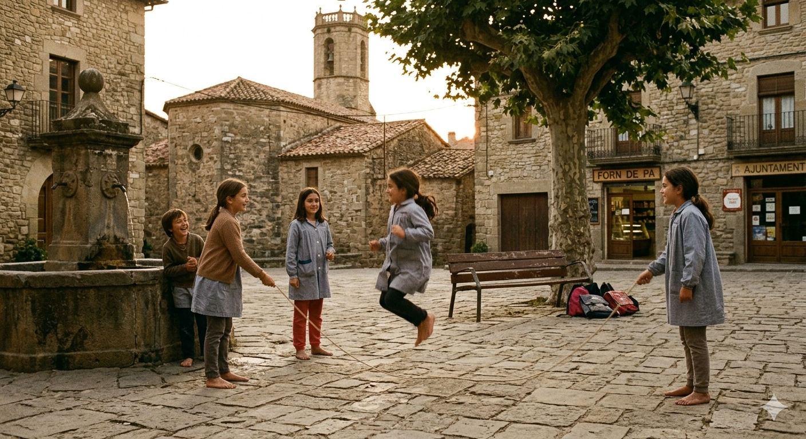
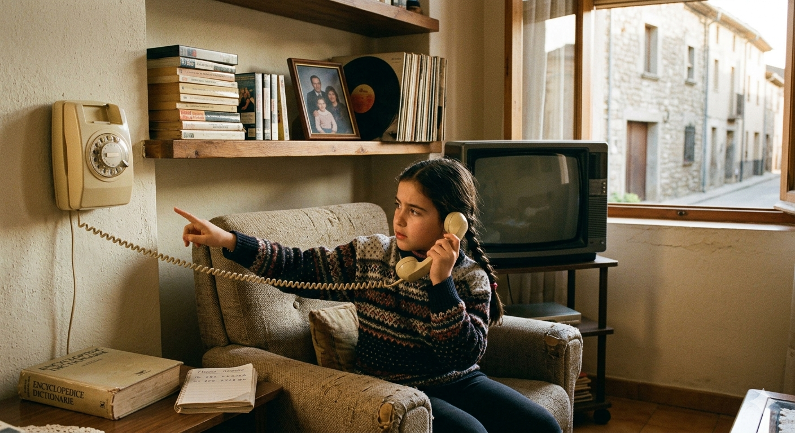
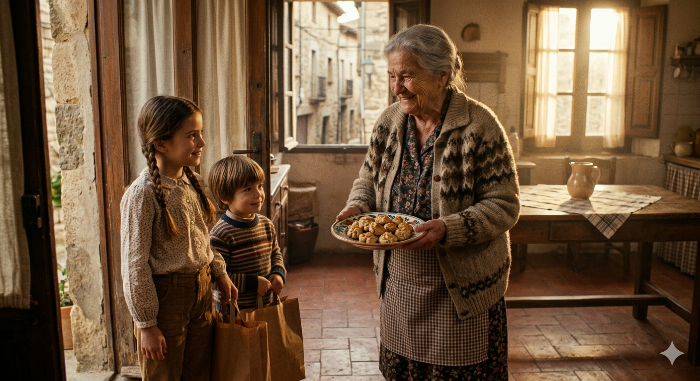
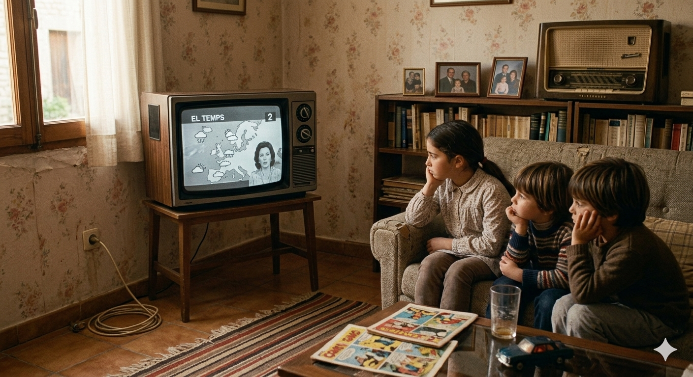
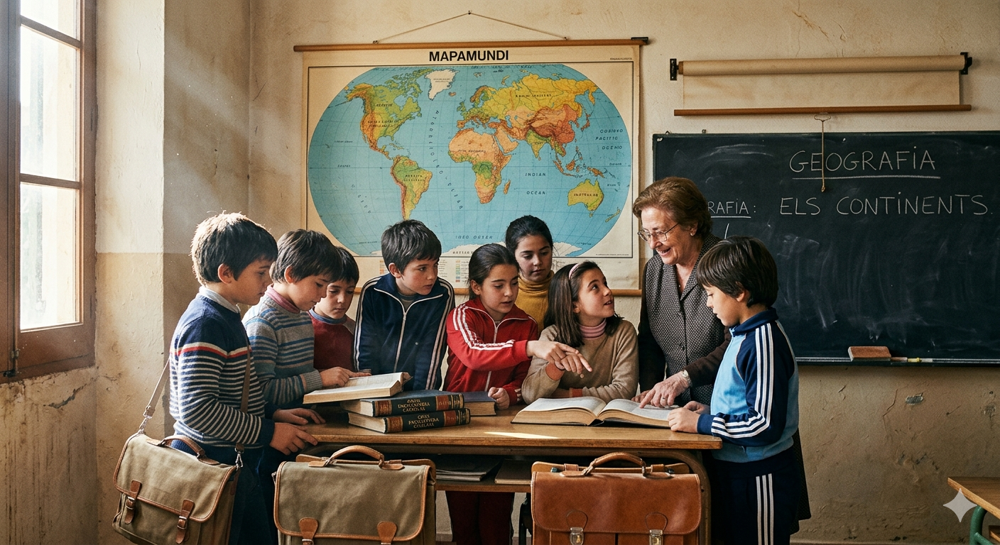

La vida quan tenia deu anys
En aquest relat, una dona recorda com era la seva infància i la compara amb la vida dels joves d’avui.
Focus: infància, records, escola, família, tecnologia i contrast amb l’actualitat.
Exercici 1 · Completa els records
Les imatges estan barrejades. Prem el botó de cada imatge per escoltar el fragment corresponent. El mateix botó serveix per pausar i continuar el fragment. Pots comprovar cada imatge per separat.
Puntuació total: 0/30
Recordo que després de l'escola anava al a jugar fins que es feia . Ens ho inventàvem tot: , saltar a o simplement seure al banc de la plaça a explicar-nos .

No teníem , ni , ni ordinadors a casa. Trucàvem al telèfon de la línia de , i si no hi era ningú, ja trucàvem més .

La meva àvia vivia a l' pis i no tenia . Cada li pujàvem la i ella ens rebia amb galetes .

La televisió només tenia dos i els dibuixos només els veien a la . Quan començava el , ja sabíem que s'havia acabat la .

A classe teníem una i un penjat a la . Si volíem saber alguna cosa, havíem de buscar en un o preguntar a la .
La roba la compraven els i les havien de durar tot . Em feia dur aquelles vambes d'escola.
Exercici 2 · Contrast entre abans i ara
Torna a escoltar el vídeo complet abans de respondre. Aquest exercici pregunta pel contrast global entre la infància d’abans i la vida actual.
Puntuació: 0/10Exercici 3 · Present, imperfet i futur
Completa les formes verbals. Cada text té un temps principal, però hi apareixen diverses persones: jo, tu, ell/ella, nosaltres, vosaltres i ells/elles.
3A · Present: com vivim ara
Ara jo moltes hores i sovint cansada a casa. Tu em que hauria de descansar més, però jo gairebé mai t’. La meva germana lluny i sempre els diumenges. Nosaltres sopar junts almenys una vegada per setmana. Vosaltres massa temps mirant el mòbil? Els meus fills encara que els expliqui històries, i jo em feliç quan m’escolten.
Puntuació: 0/103B · Imperfet: quan tenia deu anys
Quan tenia deu anys, jo moltes hores al carrer. Tu sempre tard a escola i els mestres que havíem de ser més responsables. El meu avi que abans la gent amb menys presses. Nosaltres a la plaça fins que es feia fosc. Vosaltres sovint a casa a berenar. Els veïns tothom i cada matí. Jo em lliure, encara que a vegades amb tenir coses noves.
Puntuació: 0/113C · Futur: com imaginam el que vindrà
D’aquí uns anys jo en un lloc més tranquil, prop de la mar. Tu fent bromes quan estiguis nerviós, i això encara em farà riure. La meva germana probablement a un altre país. Nosaltres més temps per veure’ns, encara que tots estarem més grans. Vosaltres a visitar-nos durant l’estiu? Els meus fills aquestes converses i potser a valorar les coses senzilles. Jo em agraïda i aquests records com un petit tresor.
Puntuació: 0/9